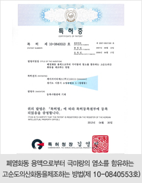
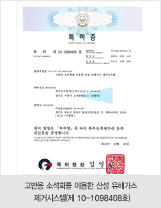
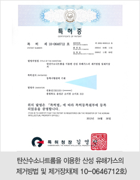
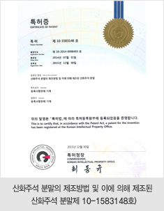
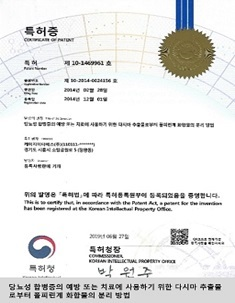
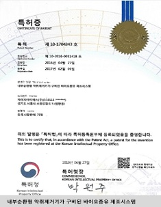
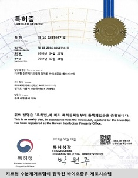
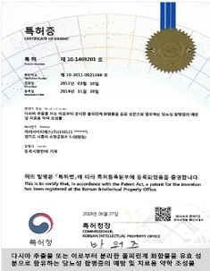
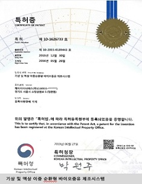
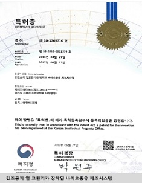

<!DOCTYPE html>
<html>

<head>
    <meta charset="utf-8">
    <meta http-equiv="X-UA-Compatible" content="IE=edge">
    <title>KG ETS</title>
    <meta name="viewport" content="initial-scale=1.0,user-scalable=no,maximum-scale=1,width=device-width">
    <meta name="keywords" content="KG ETS, KG, KG ECO  TECHNOLOGY SERVICES, 친환경, 재생에너지, 신소재, 도금용 산화동, 황산동, 산업용 산화동, 탄산동, 산화텅스텐, 바이오중유, 에너지사업, 증기사업, 신소재사업, R&E사업, 바이오사업부, 열병합발전, 존경받는 기업, 자랑스런 회사, 환경, 기술, 봉사, 산업폐기물, 시약 분류 시스템, 폐시약">
    <link rel="icon" href="../../../resources/images/favicon-32.png" sizes="32x32">
    <link rel="icon" href="../../../resources/images/favicon-128.png" sizes="128x128">
    <link href="https://fonts.googleapis.com/css?family=Source+Serif+Pro:400,600,700&display=swap" rel="stylesheet">
    <link rel="stylesheet" href="../../../resources/css/reset.css">
    <link rel="stylesheet" href="../../../resources/css/bootstrap.css">
    <link rel="stylesheet" href="../../../resources/plugins/jquery-ui/jquery-ui.min.css">
    <link rel="stylesheet" href="../../../resources/plugins/swiper-4.4.6/css/swiper.min.css">
    <link rel="stylesheet" href="../../../resources/plugins/fontawesome-free/css/all.min.css">
    <link rel="stylesheet" href="../../../resources/css/style.css">
    <!-- jquery -->
    <script src="../../../resources/plugins/jquery/jquery.min.js"></script>
    <!-- jquery -->
    <script src="../../../resources/plugins/jquery-ui/jquery-ui.min.js"></script>
    <!-- bootstrap -->
    <script src="../../../resources/plugins/bootstrap/js/bootstrap.bundle.min.js"></script>
    <!-- swiper -->
    <script src="../../../resources/plugins/swiper-4.4.6/js/swiper.min.js"></script>
    <!-- ui 관련 -->
    <script src="../../../resources/js/ui.js"></script>
</head>

<body>
    <div id="wrap">
        <div id="header-block">
            <!-- header include -->
        </div>

        <div id="content-block">
            <div id="content">

                <span data-depth1 hidden data-menu="company">회사소개</span>
                <span data-depth2 hidden>연구개발</span>

                <div id="visual" class="company">
                    <div class="container">
                        <h2>COMPANY</h2>
                        <p>KG ETS는 자연, 환경 모두가 원하는 가치를 고민하고 실현합니다.</p>
                    </div>
                </div>

                <div id="nav-block">
                    <!-- nav include -->
                </div>

                <div id="view">
                    <div class="container">
                        <!-- 실 컨텐츠 -->
                        <div class="title-wrap">
                            <h3 class="title">연구개발</h3>
                        </div>
                        <article class="article-rnd">
                            <div class="rnd">
                                <div class="jumbotron jumbotron-rnd">

                                </div>
                                <div class="txt">
                                    우수한 전문 인력과 최신 분석장비를 갖추고 폐기물, 폐수, 재활용을 통한 유가금속 회수, 신재생 에너지 기술 개발 등 <br>다각적인 연구와 새로운 제품 개발에 앞장서고 있습니다.
                                </div>
                                <div class="summary">
                                    <h4 class="subtitle">주요 연구분야</h4>
                                    <ul class="row row-100">
                                        <li class="col-12 col-md-4">
                                            <div class="num"><span>01</span></div>
                                            <strong class="heading">폐기물 및 폐수처리 최적화</strong>
                                            <p class="text">각종 유해 폐기물 및 폐수의 성상에 따른
                                                철저한 연구분석을 통하여 법적 요구사항 뿐만
                                                아니라 환경, 안전, 보건등과 관련된 사항을
                                                종합적으로 고려한 최적처리 방법 도출</p>
                                        </li>
                                        <li class="col-12 col-md-4">
                                            <div class="num"><span>02</span></div>
                                            <strong class="heading">자원회수공정 개발</strong>
                                            <p class="text">지속적인 연구개발을 통해 최적의
                                                재활용 원료를 선별하고 제품의 품질을 상시키며
                                                새로운 제품개발을 통해 무한자원으로서의
                                                가치 창출 연구</p>
                                        </li>
                                        <li class="col-12 col-md-4">
                                            <div class="num"><span>03</span></div>
                                            <strong class="heading">신·재생에너지기술</strong>
                                            <p class="text">자원순환형 사회를 위한
                                                폐기물 에너지화 설비 및 친환경 시스템 개발</p>
                                        </li>
                                    </ul>
                                </div>
                                <div class="mt-content-padding">
                                    <h4 class="subtitle">주요분석 장비(Analysis Instrument)</h4>
                                    <p>ICP-OES, Calorimeter, Gas Chromatograph, XRF(X-Ray Flourescence Spectrometer), <br>
                                        Kari Fisher Titrator, Auto titrator DL50, 	Moisture Balance etc</p>
                                </div>
                                <div class="license">
                                    <h4 class="subtitle">보유중인 특허 목록</h4>
                                    <ul class="row row-20">
                                        <li class="col-12 col-md-6">
                                            <div class="item">
                                                <div class="img"></div>
                                                <div class="info">
                                                    <strong>제 10-0840553호</strong>
                                                    <p>폐염화동 용액으로부터 극미량의 염소를 함유하는 고순도의산화동을제조하는 방법</p>
                                                </div>
                                            </div>
                                        </li>
                                        <li class="col-12 col-md-6">
                                            <div class="item">
                                                <div class="img"></div>
                                                <div class="info">
                                                    <strong>제 10-1098408호</strong>
                                                    <p>고반응 소석회를 이용한 산성 유해가스 제거시스템</p>
                                                </div>
                                            </div>
                                        </li>
                                        <li class="col-12 col-md-6">
                                            <div class="item">
                                                <div class="img"></div>
                                                <div class="info">
                                                    <strong>제 10-0646712호</strong>
                                                    <p>탄산수소나트륨을 이용한 산성 유해가스의 제거방법 및 제거장치</p>
                                                </div>
                                            </div>
                                        </li>
                                        <li class="col-12 col-md-6">
                                            <div class="item">
                                                <div class="img"></div>
                                                <div class="info">
                                                    <strong>제 10-1583148호</strong>
                                                    <p>산화주석 분말의 제조방법 및 이에 의해 제조된 산화주석 분말</p>
                                                </div>
                                            </div>
                                        </li>
                                        <li class="col-12 col-md-6">
                                            <div class="item">
                                                <div class="img"></div>
                                                <div class="info">
                                                    <strong>제 10-1469961호</strong>
                                                    <p>당뇨성 합병증의 예방 또는 치료에 사용하기 위한 다시마 추출물로부터 폴피린계 화합물의 분리방법</p>
                                                </div>
                                            </div>
                                        </li>
                                        <li class="col-12 col-md-6">
                                            <div class="item">
                                                <div class="img"></div>
                                                <div class="info">
                                                    <strong>제 10-1704343호</strong>
                                                    <p>내분 순환형 악취제거기가 구비된 바이오중유 제조시스템 </p>
                                                </div>
                                            </div>
                                        </li>
                                        <li class="col-12 col-md-6">
                                            <div class="item">
                                                <div class="img"></div>
                                                <div class="info">
                                                    <strong>제 10-1811947호</strong>
                                                    <p>키트형 수분제거트랩이 장착된 바이오중유 제조시스템</p>
                                                </div>
                                            </div>
                                        </li>
                                        <li class="col-12 col-md-6">
                                            <div class="item">
                                                <div class="img"></div>
                                                <div class="info">
                                                    <strong>제 10-1469201호</strong>
                                                    <p>다시마 추출물 또는 이로부터 분리한 폴피린계 화합물을 유효성분으로 함유하는 당뇨성 합병증의 예방 및 치료용 악학 조성물 </p>
                                                </div>
                                            </div>
                                        </li>
                                        <li class="col-12 col-md-6">
                                            <div class="item">
                                                <div class="img"></div>
                                                <div class="info">
                                                    <strong>제 10-1626733호</strong>
                                                    <p>기상 및 액상 이중순환형 바이오중유 제조시스템 </p>
                                                </div>
                                            </div>
                                        </li>
                                        <li class="col-12 col-md-6">
                                            <div class="item">
                                                <div class="img"></div>
                                                <div class="info">
                                                    <strong>제 10-1769710호</strong>
                                                    <p>건조공기 열교환기가 장착된 바이오중유 제조시스템 </p>
                                                </div>
                                            </div>
                                        </li>
                                    </ul>
                                </div>
                            </div>
                        </article>
                        <!-- //실 컨텐츠 -->
                    </div>
                </div>
            </div>
        </div>

        <div id="footer-block">
            <!-- footer include -->
        </div>
    </div>

 <script>
 </script>

</body>

</html>
